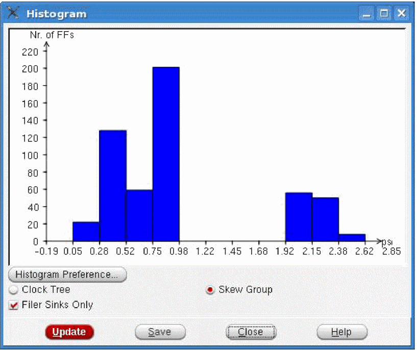

Clock Tree Debugger Histogram
Displays histogram of number of leaf pins versus clock insertion delay. In the View menu, choose Histogram. The following form opens. The vertical axis of the histogram shows the number of leaf pins that have the delay shown (in picoseconds) on the horizontal axis of the histogram. You can view histogram for multiple corners at once in different colors. You can also Export the data displayed in the histogram in a CSV format.
You can also save the histogram in a file by using the ctd_save_histogram command. However, before using this command, first open and configure the histogram in the GUI, including skew group and delay corners.

You can also click the Preference submenu in the View menu of the CTD to open this form. For details, see "Set Preferences for CTD GUI Configuration".
Return to top